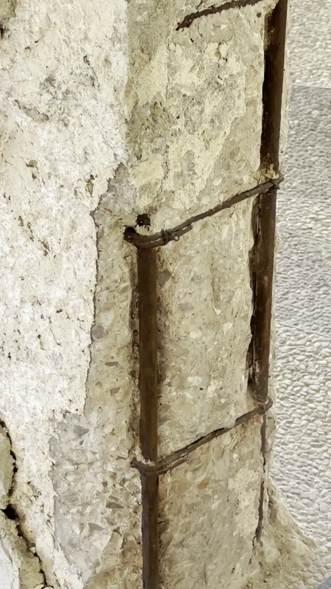
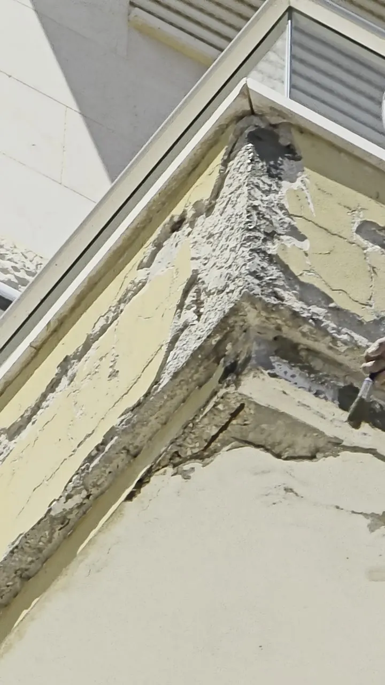
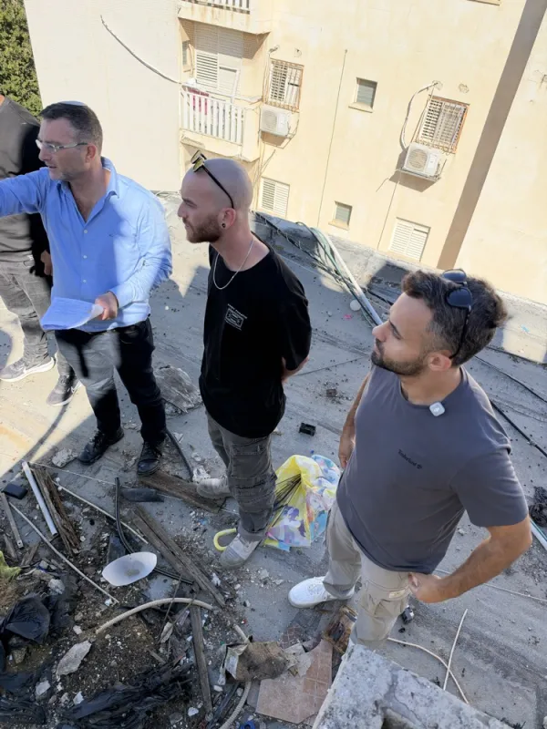
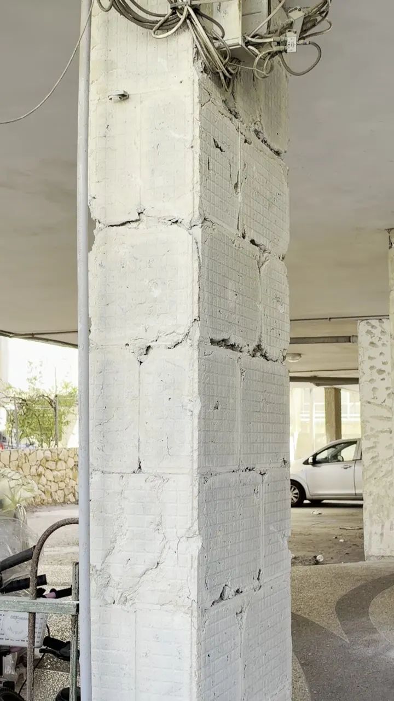
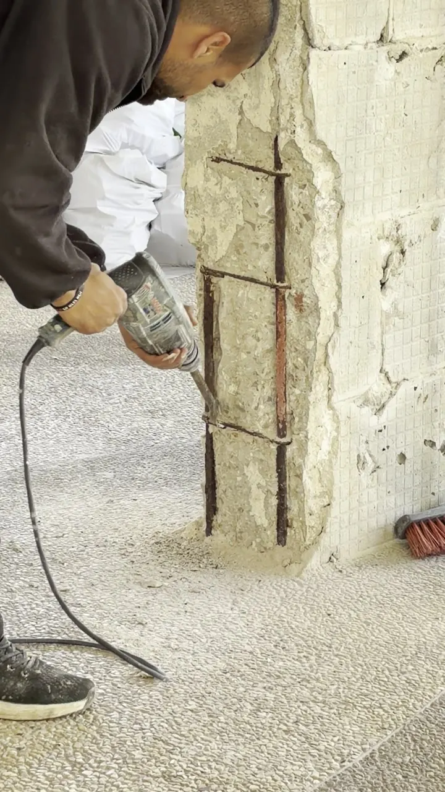

מה זה צו מבנה מסוכן
צו מבנה מסוכן הוא הודעה מהרשות המקומית שקובעת שחלק מהמבנה מסכן את הדיירים או את עוברי האורח. בדרך כלל מדובר במרפסות פגועות, טיח או בטון שמתפוררים, ברזל חשוף, או לוחות אבן רופפים בחזית. הצו מחייב את בעלי הנכס לתקן את הליקויים עד מועד שנקבע בו.
צו כזה לא אומר שהבניין עומד לקרוס. הוא אומר שיש ליקוי שצריך לטפל בו בצורה מקצועית ומתועדת, ושהרשות רוצה לראות אישור שהטיפול בוצע.


מה לבדוק בצו עצמו
המועד לביצוע
לפעמים הוא קצר מאוד. זה הדבר הראשון שצריך לדעת.
רשימת הליקויים
אילו חלקים במבנה הוגדרו כמסוכנים, ואיפה הם נמצאים.
דרישות מיידיות
למשל גידור, פינוי או הגבלת גישה לאזור מסוים.
מה נדרש לסגירת הצו
ברוב המקרים הרשות דורשת אישור מהנדס קונסטרוקציה שהליקויים תוקנו.
מה עושים בימים הראשונים
מאבטחים את השטח
אם יש חלקים שעלולים ליפול, מגבילים את הגישה מתחתם. בטיחות קודמת לכל.
מעדכנים את כל בעלי הדירות
בבית משותף, הטיפול ברכוש המשותף הוא אחריות של כל הבעלים. כדאי לכנס את הדיירים מהר ולהסמיך את הוועד לפעול.
מזמינים אבחון
אנחנו מגיעים לסיור במבנה יחד עם קונסטרוקטור, בודקים את הליקויים ומגדירים בדיוק מה צריך לעשות.
מקבלים תוכנית והצעה מפורטת
הצעה לפי סעיפים, כך שתדעו בדיוק מה כלול ועל מה אתם משלמים.

איך נראה תהליך השיקום
- 1פנייה ראשונית
- 2אבחון עם קונסטרוקטור
- 3תוכנית והצעת מחיר
- 4ביצוע השיקום
- 5אישור סופי והסרת הצו
לאורך כל הביצוע אנחנו בקשר ישיר עם הקונסטרוקטור, ובסוף מטפלים מול הרשות עד שהצו מוסר.
שיטת הגישה לחזית נבחרת לפי הפרויקט: סנפלינג לתיקונים נקודתיים ולגבהים, במת הרמה או פיגום לעבודות נרחבות. הבחירה משפיעה על לוח הזמנים ועל העלות.


לפרטים על שירות שיקום מבנים מסוכנים של OUTDOR
מה קורה אם לא מטפלים
מעבר לסכנה הממשית לדיירים ולעוברי האורח, התעלמות מצו עלולה להוביל להליכים מצד הרשות, ובמקרים מסוימים הרשות רשאית לבצע את העבודה בעצמה ולחייב את הבעלים בעלות. גם מבחינת ביטוח ואחריות, אירוע שקורה אחרי שהתקבל צו הוא מצב שאף אחד לא רוצה להיות בו.
המידע במדריך הוא כללי ואינו ייעוץ משפטי. לשאלות משפטיות לגבי חלוקת העלויות או מול הרשות, כדאי להתייעץ עם עורך דין.
איך בוחרים קבלן לשיקום מבנה מסוכן
- קבלן רשום בפנקס הקבלנים. בדקו את מספר הרישיון.
- ניסיון ספציפי במבנים מסוכנים. בקשו לראות פרויקטים דומים, לפני ואחרי.
- עבודה צמודה עם קונסטרוקטור. בלי אישור מהנדס הצו לא יוסר.
- ביטוח צד ג' וחבות מעבידים. בקשו אישור קיום ביטוחים.
- התחייבות להסרת הצו. לא רק "נתקן", אלא ליווי עד האישור הסופי.
- הצעה מפורטת לפי סעיפים ואחריות בכתב.